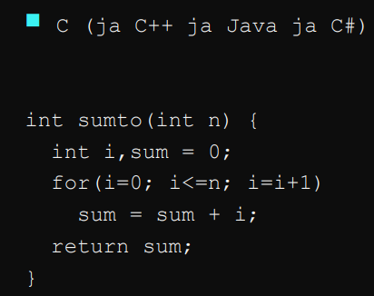
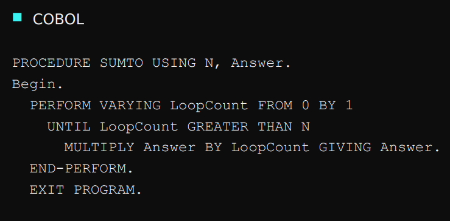
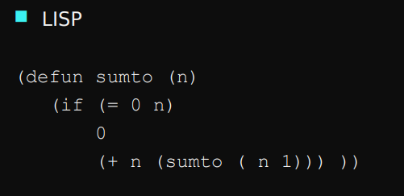
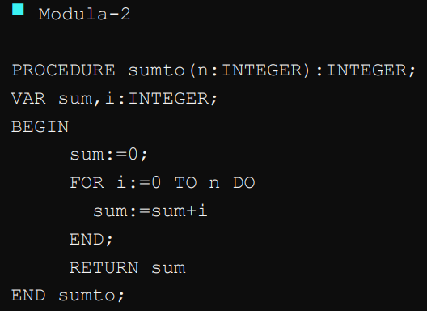
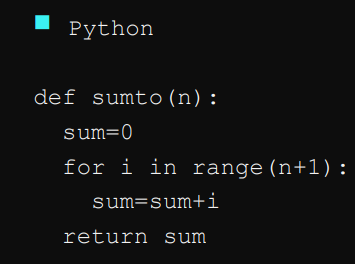
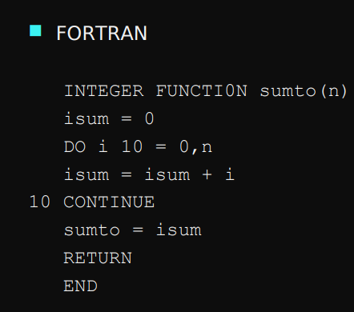

| C | cobol | lisp |
|---|---|---|
|  |  |  |
| modula2 | python | fortan |
|  |  |  |
Esimene mikroprotsessor on *Intel 4004*, mis loodi aastal 1971. See on 4 bittine mikroprotsessor ja 108 Khz taktisagedusega.
Structured Query Language ehk “*SQL*”. Tööstuse ja ISO standard relatsiooniliste andmebaasidega töötamisel.
USA kaitseministeeriumi loodud esimene andmepakette vahetav arvutivõrk on *ARPANET*. Põhiline kasutusala oli teaduse arendamine. *ARPANET* on interneti eelkäija.
Nolan Bushnell proovis teha oma enda mängu Space War, kuid ei müünud piisavalt, millele järgnes tema loodud uus firma *Atari* aastal 1972. *Atari* väljastas mängu Pong, millest sai väga populaarne mäng ja 1977 sisenes *Atari* kodu arvutite turule.
Gary Kildall kirjutas lihtsa operatsiooni süsteemi, mida ta nimetas *cp/m* (Control Program/Monitor)
IBM tutvustas IBM 3340 kõvaketta, mille kood nimi on *Winchester.* Kõvaketta suurus on 70MB.
Proovides päästa oma läbi kukkumas firmat MITS, firma omanik Ed Roberts hakkab ehitama väikest arvutit. *Altair* 8800 mikroarvuti põhineb Intel 8008 kiibil ning hakkas maksma 500 USD.
“*Alto*”on projekti nimi, milles Xerox hakkas ehitama isiklikke arvuteid uurimuste jaoks.
Dennis Ritchie ja Ken Thompson ja teised leiutasid *unix-i,* mis oli algul kirjutatud assembly keeles kirjutati hiljem ümber *C keeles*, mis peamiselt arendatud Dennis Ritchie poolt*.*
*Microsofti algus* sai aastal 1975, Bill Gates ja Paul Allen hakkasid müüma erinevaid versioone BASIC proge keelest Altair 8800 mikroarvutitele. 1980 tegi Microsoft ja IBM diili, teha op süsteem isiklikele arvutitele aka PC. Selle nimeks sai MS-DOS ning muutus domineerivaks arvuti turul.
*Apple algus* sai aastal 1976, Steve Jobs, Steve Wozniak esimene toode oli “Apple I” koduarvuti, mis oli disainitud Wozniak-i poolt. 1977 Apple tutvustas “*Apple II*” mis osutus väga populaarseks ning 1984 *Macintosh*, millel oli graafiline UI ja hiir (kuulus Super Bowl reklaam Orwell 1984 teemaline).
*1977 koduarvutid* korraga 3 eelnevalt kokku pandud arvutit: Commodore PET, APPLE II, TRS-80
*VisiCalc* excel-i laadne programm, mis tegi Apple II koduarvutist äri arvuti.
*Symbolics* asutati 1980. Firma hakkas looma eri otstarbelist riistvara, mis jooksutas LISP programme (peamiselt “AI”) efektiivselt.
Aastal 1981 IBM avaldab oma arvuti *IBM PC.* Sellel oli lai valik tarkvararakendusi nt VisCal, MS BASIC ja riistvara seadmeid nt CGA graafikakaart andes arvutile 640x200 resolutsiooni ja 16 värvi.
*Sun* Microsystems, tutvustasid esimest tööarvutit, millel oli kaasas TCP/IP e. interneti protokoll.
1983 *Oracle* korporatsioon hakkas tegema SQL andmebaase.